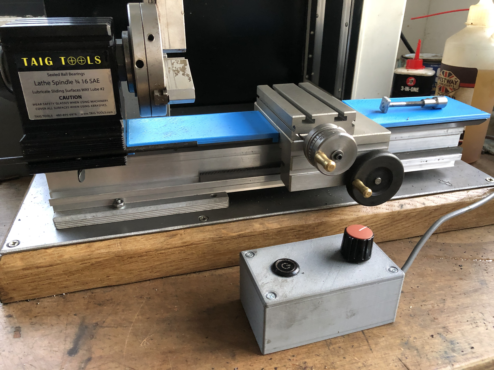
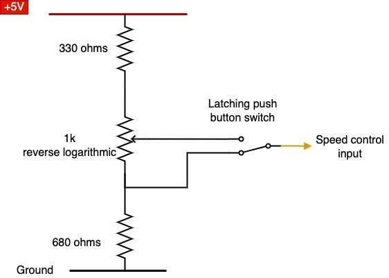

Starting with no experience of machining
The journey of a novice
Before purchasing a lathe, my experience of metalwork extended to two years at school in which time I made a hammer. 🙄
My lathe is a Taig Microlathe II puchased second-hand for around £300 and complete with motor and baseplate..
Tthe motor that came with the lathe was a 1/4hp AC but this photo shows the latest arrangement. The motor has been replaced with a sewing maching motor and a new baseplate used. This one is a heavy piece of oak kitchen worktop faced with 2mm steel plate.
The motor is a type of stepper motor and its controller provides variable speed from around 100rpm to 2500rpm. It comes with a pedal speed controller, as used with sewing machines, based around a magnet and a Hall Effect sensor. Two problems quickly emerge though - a magnet around a lathe attracts swarf and the precision is poor. The sensor provides a variable voltage output and can easily be replaced with a potentiometer. The values used are partly calculated and partly trial and error designed to give the smoothest liner response to the rotation of the potentiometer. Using s reverse logarithmic potentiometer significantly helped in this respect.
